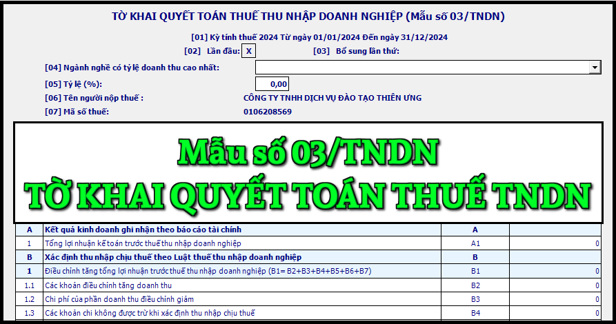

Mẫu Tờ khai quyết toán thuế thu nhập doanh nghiệp áp dụng đối với phương pháp doanh thu - chi phí mới nhất năm 2024 là mẫu số: 03/TNDN được ban hành kèm theo Thông tư số 80/2021/TT-BTC.
|
CỘNG HOÀ XÃ HỘI CHỦ NGHĨA VIỆT NAM
Độc lập - Tự do - Hạnh phúc TỜ KHAI QUYẾT TOÁN THUẾ THU NHẬP DOANH NGHIỆP (Áp dụng đối với phương pháp doanh thu - chi phí) [01] Kỳ tính thuế: Năm ....... Từ ....../....../...... đến ....../....../...... [02] Lần đầu [03] Bổ sung lần thứ:…
[04] Ngành nghề có tỷ lệ doanh thu cao nhất: ................
[05] Tỷ lệ (%): ......... % [06] Tên người nộp thuế: ........................................................................................... [07] Mã số thuế: [08] Tên đại lý thuế (nếu có):...................................................................................... [09] Mã số thuế: [10] Hợp đồng đại lý thuế: Số.............................................ngày..................................
Đơn vị tiền: Đồng Việt Nam
Tôi cam đoan số liệu, tài liệu khai trên là đúng và chịu trách nhiệm trước pháp luật về những số liệu, tài liệu đã khai./.
|
Cách kê khai tờ khai quyết toán thuế thu nhập doanh nghiệp - mẫu số 03/TNDN theo TT 80/2021 như sau:
I. Đối tượng áp dụng
- Người nộp thuế thu nhập doanh nghiệp tính thuế theo phương pháp doanh thu - chi phí theo quy định của pháp luật về thuế thu nhập doanh nghiệp chuẩn bị số liệu, lập hồ sơ khai thuế và gửi đến cơ quan thuế quản lý trực tiếp chậm nhất là ngày cuối cùng của tháng thứ 3 kể từ ngày kết thúc năm dương lịch hoặc năm tài chính đối với trường hợp khai quyết toán thuế thu nhập doanh nghiệp năm; chậm nhất là ngày thứ 45 (bốn mươi lăm), kể từ ngày có quyết định giải thể, phá sản, chấm dứt hoạt động hoặc tổ chức lại doanh nghiệp.
- Trường hợp chuyển đổi loại hình doanh nghiệp (không bao gồm doanh nghiệp nhà nước cổ phần hóa) mà doanh nghiệp chuyển đổi kế thừa toàn bộ nghĩa vụ về thuế của doanh nghiệp được chuyển đổi thì không phải khai quyết toán thuế đến thời điểm có quyết định về việc chuyển đổi doanh nghiệp, doanh nghiệp khai quyết toán khi kết thúc năm.
- Người nộp thuế thu nhập doanh nghiệp tính thuế theo phương pháp doanh thu - chi phí theo quy định của pháp luật về thuế thu nhập doanh nghiệp thực hiện tạm nộp thuế thu nhập doanh nghiệp theo quý (bao gồm cả tạm phân bổ số thuế thu nhập doanh nghiệp cho địa bàn cấp tỉnh nơi có đơn vị phụ thuộc, địa điểm kinh doanh, nơi có bất động sản chuyển nhượng khác với nơi người nộp thuế đóng trụ sở chính) chậm nhất là ngày 30 của tháng đầu quý sau và khai quyết toán thuế thu nhập doanh nghiệp năm.
II. Hướng dẫn khai tờ khai mẫu số 03/TNDN
Chỉ tiêu [01]: Ghi rõ kỳ tính thuế năm (theo năm dương lịch hoặc năm tài chính đối với doanh nghiệp áp dụng năm tài chính khác với năm dương lịch), từ ngày đầu tiên của năm dương lịch/năm tài chính hoặc ngày bắt đầu hoạt động kinh doanh (đối với doanh nghiệp mới thành lập) hoặc ngày hợp đồng bắt đầu có hiệu lực (đối với hợp đồng) đến ngày kết thúc năm dương lịch/năm tài chính hoặc ngày chấm dứt hoạt động kinh doanh hoặc chấm dứt hợp đồng hoặc chuyển đổi hình thức sở hữu doanh nghiệp hoặc tổ chức lại doanh nghiệp được xác định phù hợp với kỳ kế toán theo quy định của pháp luật về kế toán.
Chỉ tiêu [02], [03]: Tích chọn “Lần đầu”. Trường hợp người nộp thuế phát hiện hồ sơ khai thuế lần đầu đã nộp cho cơ quan thuế có sai, sót thì kê khai bổ sung theo số thứ tự của từng lần bổ sung.
+ NNT khai thuế điện tử thì kể từ thời điểm Hệ thống Etax có Thông báo chấp nhận hồ sơ khai thuế đối với Tờ khai thuế “Lần đầu”, các Tờ khai thuế tiếp theo của cùng kỳ tính thuế là tờ khai “Bổ sung”. NNT phải nộp Tờ khai “Bổ sung” theo quy định về khai bổ sung.
Chỉ tiêu [04], [05]: NNT ghi tên và tỷ lệ doanh thu của ngành nghề có tỷ lệ doanh thu cao nhất trong kỳ tính thuế
Chỉ tiêu [06], [07]: Khai thông tin “Tên người nộp thuế và mã số thuế” theo thông tin đăng ký doanh nghiệp hoặc đăng ký thuế của người nộp thuế.
+ NNT khai thuế điện tử thì sau khi điền đầy đủ, chính xác thông tin “Mã số thuế”, Hệ thống Etax tự động hỗ trợ hiển thị thông tin về “Tên người nộp thuế”.
Chỉ tiêu [08], [09], [10]: NNT ghi tên đại lý thuế, mã số thuế đại lý thuế, thông tin hợp đồng đại lý thuế trong trường hợp NNT khai thuế qua đại lý thuế. Đại lý thuế phải có tình trạng đăng ký thuế “Đang hoạt động” và Hợp đồng phải đang còn hiệu lực tương ứng tại thời điểm khai thuế.
+ NNT khai thuế điện tử thì Hệ thống Etax tự động hỗ trợ hiển thị thông tin về Đại lý thuế, Hợp đồng đại lý thuế đã đăng ký với cơ quan thuế để NNT lựa chọn trong trường hợp NNT có nhiều Đại lý thuế, Hợp đồng.
Chỉ tiêu [A1]: NNT kê khai tổng lợi nhuận kế toán trước thuế thu nhập doanh nghiệp trong kỳ tính thuế theo quy định của pháp luật về kế toán. Chỉ tiêu [A1] được lấy từ chỉ tiêu [22] trên Phụ lục 03-1A hoặc chỉ tiêu [19] trên Phụ lục 03-1B hoặc chỉ tiêu [90] trên Phụ lục 03-1C
Chỉ tiêu [B1]: NNT kê khai toàn bộ các điều chỉnh về doanh thu hoặc chi phí được ghi nhận theo chế độ kế toán, nhưng không phù hợp với quy định của Luật thuế TNDN, làm tăng tổng lợi nhuận trước thuế TNDN của cơ sở kinh doanh. Chỉ tiêu này được xác định bằng tổng các Chỉ tiêu từ [B2] đến [B7].
Cụ thể: [B1] = [B2] + [B3] + [B4] + [B5] + [B6] + [B7]
Chỉ tiêu [B2]: NNT kê khai toàn bộ các khoản điều chỉnh dẫn đến tăng doanh thu tính thuế do sự khác biệt giữa các quy định của pháp luật về kế toán và thuế, bao gồm các khoản được xác định là doanh thu để tính thuế TNDN theo quy định của Luật thuế TNDN nhưng không được ghi nhận là doanh thu trong kỳ theo quy định của chuẩn mực kế toán về doanh thu. Chỉ tiêu này cũng phản ánh các khoản giảm trừ doanh thu được chấp nhận theo chế độ kế toán nhưng không được chấp nhận theo qui định của luật thuế.
Chỉ tiêu [B3]: NNT kê khai toàn bộ các khoản chi phí liên quan đến việc tạo ra các khoản doanh thu được ghi nhận là doanh thu theo chế độ kế toán nhưng được điều chỉnh giảm khi tính thu nhập chịu thuế trong kỳ theo các qui định của Luật thuế TNDN. Điển hình nhất của các chi phí này là các khoản chi liên quan đến doanh thu đã được đưa vào doanh thu tính thuế của các năm trước (các khoản doanh thu này sẽ được điều chỉnh giảm tương ứng ở chỉ tiêu [B9] - Giảm trừ các khoản doanh thu đã tính thuế năm trước).
Chỉ tiêu [B4]: NNT kê khai toàn bộ các khoản chi phí không được trừ khi xác định thu nhập chịu thuế TNDN theo quy định của Luật thuế TNDN
Chỉ tiêu [B5]: NNT kê khai toàn bộ số thuế TNDN (hoặc một loại thuế có bản chất tương tự như thuế TNDN) cơ sở kinh doanh đã nộp ở nước ngoài đối với số thu nhập mà cơ sở nhận được từ các hoạt động sản xuất, kinh doanh, cung cấp dịch vụ ở nước ngoài trong kỳ tính thuế dựa trên các Biên lai và/hoặc chứng từ nộp thuế ở nước ngoài và được lấy từ dòng “Tổng cộng” tại cột (4) trên Phụ lục 03-4/TNDN
Chỉ tiêu [B6]: NNT kê khai toàn bộ khoản điều chỉnh tăng lợi nhuận do xác định giá thị trường đối với giao dịch liên kết trong trường hợp doanh nghiệp phải xác định giá trị bằng tiền của các khác biệt trọng yếu khi so sánh giữa giao dịch độc lập với giao dịch liên kết hoặc do cơ quan thuế ấn định mức giá được sử dụng để kê khai tính thuế, ấn định thu nhập chịu thuế khi doanh nghiệp không kê khai hoặc kê khai không đầy đủ các giao dịch liên kết phát sinh.
Chỉ tiêu [B7]: NNT kê khai toàn bộ số tiền của các điều chỉnh khác (chưa được điều chỉnh tại các chỉ tiêu từ [B2] đến [B6]) do sự khác biệt giữa chế độ kế toán và Luật thuế TNDN dẫn đến làm tăng tổng thu nhập trước thuế.
Chỉ tiêu [B8]: NNT kê khai toàn bộ các khoản điều chỉnh dẫn đến giảm lợi nhuận trước thuế đã được phản ánh trong hệ thống sổ sách kế toán của doanh nghiệp. Chỉ tiêu này được xác định bằng công thức: [B8] = [B9] + [B10] + [B11] + [B12]
Chỉ tiêu [B9]: NNT kê khai toàn bộ các khoản doanh thu được hạch toán trong Báo cáo Kết quả kinh doanh năm nay của cơ sở kinh doanh nhưng đã đưa vào doanh thu để tính thuế TNDN của các năm trước.
+ Trường hợp NNT bán hàng và đã xuất hoá đơn trong năm trước nhưng giao hàng trong năm sau. Theo chuẩn mực kế toán về doanh thu, NNT chỉ ghi nhận doanh thu khi khoản doanh thu đó đã được xác định tương đối chắc chắn. Tuy nhiên, về doanh thu để xác định thuế TNDN, khi NNT đã lập hoá đơn bán hàng, cung ứng dịch vụ thì khoản doanh thu này phải được đưa vào để tính thu nhập chịu thuế. Như vậy, đến năm sau khi NNT đã giao hàng và đủ điều kiện ghi nhận doanh thu theo chuẩn mực kế toán thì khoản doanh thu bán hàng này mới được ghi nhận doanh thu trên sổ sách kế toán. Tuy nhiên do đã được đưa vào thu nhập chịu thuế của năm trước nên khi lập tờ khai quyết toán thuế TNDN cho năm nay, NNT phải điều chỉnh giảm doanh thu chịu thuế một khoản tương ứng. (Điều chỉnh giảm chi phí được thực hiện tại chỉ tiêu [B3]).
Chỉ tiêu [B10]: NNT kê khai toàn bộ chi phí trực tiếp liên quan đến việc tạo ra các khoản doanh thu điều chỉnh tăng đã ghi vào chỉ tiêu [B2]. Các khoản chi phí được điều chỉnh tại chỉ tiêu này chủ yếu là chi phí giá vốn hàng bán hoặc giá thành sản xuất sản phẩm. Chỉ tiêu này cũng phản ánh các khoản chi phí chiết khấu thương mại được giảm trừ doanh thu theo chuẩn mực kế toán, nhưng không được giảm trừ doanh thu mà được đưa chi phí theo quy định của Luật thuế TNDN.
Chỉ tiêu [B11]: NNT kê khai chi phí lãi vay không được trừ kỳ trước được chuyển sang kỳ này của doanh nghiệp có giao dịch liên kết
Chỉ tiêu [B12]: NNT kê khai các khoản điều chỉnh khác ngoài các khoản điều chỉnh đã nêu tại các chỉ tiêu từ [B9] đến [B11] dẫn đến giảm lợi nhuận chịu thuế. Các điều chỉnh này có thể bao gồm:
1) Các khoản trích trước vào chi phí năm trước theo chế độ kế toán nhưng chưa được đưa vào chi phí để xác định thu nhập chịu thuế do chưa có đủ hoá đơn chứng từ. Sang năm sau khi các khoản này đã thực chi, cơ sở kinh doanh được quyền đưa các khoản này vào chi phí. Do các chi phí này đã được đưa vào Báo cáo kết quả kinh doanh của năm trước nên không được đưa vào Báo cáo kết quả kinh doanh của năm nay. Vì vậy, cơ sở kinh doanh sẽ thực hiện điều chỉnh tăng chi phí để thể hiện các khoản chi này.
2) Khoản lỗ chênh lệch tỉ giá ngoại tệ (thực hiện trong năm) đã được đưa vào Báo cáo kết quả kinh doanh của năm trước theo chế độ kế toán nhưng chưa được ghi nhận vào chi phí khi xác định thu nhập chịu thuế của các năm trước do chưa thực hiện.
3) Chi phí khấu hao các tài sản cố định là xe ô tô chở người từ 9 chỗ ngồi trở xuống (trừ: ô tô dùng cho kinh doanh vận tải hành khách, kinh doanh du lịch, khách sạn; ô tô dùng để làm mẫu và lái thử cho kinh doanh ô tô) có giá trị vượt trên 1,6 tỷ đồng đã thực hiện trích khấu hao hết theo chế độ quản lý, sử dụng và trích khấu hao tài sản cố định, tuy nhiên theo Luật thuế TNDN thì doanh nghiệp chỉ được tính vào chi phí được trừ đối với phần trích khấu hao tương ứng với nguyên giá từ 1,6 tỷ đồng trở xuống. Do vậy khi lập Tờ khai quyết toán thuế TNDN, cơ sở kinh doanh phải loại trừ phần chi phí trích khấu hao tương ứng với nguyên giá vượt trên 1,6 tỷ đồng để đưa vào chỉ tiêu B11-Các khoản điều chỉnh làm giảm lợi nhuận trước thuế khác trên Tờ khai quyết toán thuế TNDN
4) Các khoản thu từ cổ tức, lợi nhuận được chia từ hoạt động liên doanh liên kết trong nước sau khi đã nộp thuế TNDN.
+ Trong trường hợp NNT mua cổ phiếu trên thị trường chứng khoán thì khoản thu nhập từ lợi nhuận được chia (cổ tức) thu được từ việc sở hữu các cổ phiếu này cũng được loại trừ ra khỏi thu nhập chịu thuế. Riêng thu nhập từ việc chuyển nhượng các cổ phiếu sẽ phải cộng vào thu nhập chịu thuế.
5) Các khoản thu nhập khác không phải chịu thuế theo quy định của Chính phủ ví dụ thu nhập từ trái phiếu Chính phủ, công trái ...
Chỉ tiêu [B13]: NNT kê khai thu nhập chịu thuế TNDN thực hiện được trong kỳ tính thuế chưa trừ số lỗ phát sinh trong các năm trước được chuyển và lỗ từ hoạt động chuyển nhượng bất động sản trong kỳ tính thuế.
Chỉ tiêu này được xác định theo công thức: [B13] = [A1] + [B1] - [B8]
Chỉ tiêu [B14]: NNT kê khai tổng số thu nhập chịu thuế từ hoạt động kinh doanh và hoạt động khác (không bao gồm thu nhập từ hoạt động chuyển nhượng bất động sản) và chưa trừ chuyển lỗ trong kỳ tính thuế.
Chỉ tiêu này được xác định theo công thức: [B14] = [B13] - [B15]
Chỉ tiêu [B15]: NNT kê khai tổng số thu nhập chịu thuế từ hoạt động chuyển nhượng bất động sản (chưa trừ chuyển lỗ năm trước chuyển sang) trong kỳ tính thuế. Số liệu để ghi vào chỉ tiêu này được lấy từ chỉ tiêu [12] của Phụ lục 03-5/TNDN.
Chỉ tiêu [C1]: NNT kê khai thu nhập từ hoạt động sản xuất, kinh doanh hàng hoá, dịch vụ và thu nhập khác và được xác định bằng số liệu trên chỉ tiêu [B14].
Chỉ tiêu [C2]: NNT kê khai toàn bộ thu nhập được miễn không tính vào thu nhập tính thuế trong năm theo quy định của Luật thuế TNDN.
Chỉ tiêu [C3]: NNT kê khai tổng số lỗ từ hoạt động sản xuất kinh doanh của các năm trước chuyển sang và số lỗ từ hoạt động chuyển nhượng bất động sản trong kỳ được bù trừ với thu nhập từ hoạt động sản xuất kinh doanh để giảm trừ vào thu nhập chịu thuế của năm tính thuế.
Chỉ tiêu [C3a]: NNT kê khai số lỗ từ hoạt động SXKD của các năm trước chuyển sang để giảm trừ vào thu nhập chịu thuế của năm tính thuế. Chỉ tiêu này được lấy từ chỉ tiêu [04] trên Phụ lục 03-2/TNDN.
Chỉ tiêu [C3b]: NNT kê khai số lỗ từ hoạt động chuyển nhượng bất động sản trong kỳ sau khi bù trừ với thu nhập từ hoạt động chuyển nhượng bất động sản, nếu bù trừ không hết thì tiếp tục được bù trừ với lãi của hoạt động sản xuất kinh doanh trong kỳ.
Chỉ tiêu [C4]: NNT kê khai thu nhập tính thuế TNDN, được xác định bằng thu nhập chịu thuế trừ thu nhập được miễn thuế và các khoản lỗ được kết chuyển từ các năm trước theo quy định.
Chỉ tiêu này được xác định như sau: [C4] = [C1] - [C2] - [C3a] - [C3b].
Chỉ tiêu [C5]: NNT kê khai số tiền trích lập quỹ phát triển khoa học, công nghệ trong kỳ. Chỉ tiêu này được lấy từ chỉ tiêu [05] trên Phụ lục 03-6/TNDN.
- Doanh nghiệp được thành lập, hoạt động theo quy định của pháp luật Việt Nam được trích tối đa 10% thu nhập tính thuế hàng năm trước khi tính thuế thu nhập doanh nghiệp để lập Quỹ phát triển khoa học và công nghệ của doanh nghiệp. Doanh nghiệp tự xác định mức trích lập Quỹ phát triển khoa học công nghệ theo quy định trước khi tính thuế thu nhập doanh nghiệp. Hàng năm nếu doanh nghiệp có trích lập quỹ phát triển khoa học công nghệ thì doanh nghiệp phải lập Báo cáo trích, sử dụng Quỹ phát triển khoa học công nghệ và kê khai mức trích lập, số tiền trích lập trên Phụ lục 03-6/TNDN và tờ khai 03/TNDN.
- Quỹ phát triển khoa học và công nghệ của doanh nghiệp chỉ được sử dụng cho đầu tư nghiên cứu khoa học và phát triển công nghệ của doanh nghiệp tại Việt Nam. Các khoản chi từ Quỹ phát triển khoa học và công nghệ phải có đầy đủ hóa đơn, chứng từ hợp pháp theo quy định của pháp luật.
- Doanh nghiệp không được tính các khoản đã chi từ Quỹ phát triển khoa học và công nghệ của doanh nghiệp vào chi phí hoạt động sản xuất kinh doanh khi xác định thu nhập chịu thuế trong kỳ tính thuế. Trường hợp doanh nghiệp có chi đầu tư nghiên cứu khoa học và phát triển công nghệ của doanh nghiệp từ quỹ phát triển khoa học công nghệ mà không đủ thì phần chênh lệch còn lại giữa số thực chi và số đã trích quỹ sẽ được tính vào chi phí hoạt động sản xuất kinh doanh khi xác định thu nhập chịu thuế.
- Doanh nghiệp đang hoạt động mà có sự thay đổi về hình thức sở hữu, hợp nhất, sáp nhập thì doanh nghiệp mới thành lập từ việc thay đổi hình thức sở hữu, hợp nhất, sáp nhập được kế thừa và chịu trách nhiệm về việc quản lý, sử dụng Quỹ phát triển khoa học và công nghệ của doanh nghiệp trước khi chuyển đổi, hợp nhất, sáp nhập.
Doanh nghiệp nếu có Quỹ phát triển khoa học và công nghệ chưa sử dụng hết khi chia, tách thì doanh nghiệp mới thành lập từ việc chia, tách được kế thừa và chịu trách nhiệm về việc quản lý, sử dụng Quỹ phát triển khoa học và công nghệ của doanh nghiệp trước khi chia, tách. Việc phân chia Quỹ phát triển khoa học và công nghệ do doanh nghiệp quyết định và đăng ký với cơ quan thuế.
Chỉ tiêu [C6]: NNT kê khai thu nhập tính thuế sau khi đã trừ khoản trích lập quỹ khoa học công nghệ theo quy định và được xác định như sau: [C6] = [C4] - [C5] = [C7] + [C8].
Chỉ tiêu [C7]: NNT kê khai thu nhập tính thuế áp dụng mức thuế suất 20% bao gồm cả thu nhập được áp dụng thuế suất ưu đãi.
Chỉ tiêu [C8]: NNT kê khai thu nhập tính thuế từ hoạt động tìm kiếm, thăm dò, khai thác dầu khí tại Việt Nam hoặc từ các hoạt động sản xuất, kinh doanh hàng hoá, dịch vụ không ưu đãi khác áp dụng mức thuế suất khác 20%.
Chỉ tiêu [C8a]: NNT kê khai thuế suất (%) đối với hoạt động tìm kiếm, thăm dò, khai thác các mỏ tài nguyên quý hiếm (bao gồm: bạch kim, vàng, bạc, thiếc, wonfram, antimoan, đá quý, đất hiếm trừ dầu khí) là 50%; Trường hợp các mỏ tài nguyên quý hiếm có từ 70% diện tích được giao trở lên ở địa bàn có điều kiện kinh tế xã hội đặc biệt khó khăn thuộc danh mục địa bàn ưu đãi thuế thu nhập doanh nghiệp ban hành kèm theo Nghị định số 218/2013/NĐ-CP của Chính phủ áp dụng thuế suất thuế thu nhập doanh nghiệp 40%.
Chỉ tiêu [C9]: NNT kê khai số thuế TNDN phát sinh từ hoạt động SXKD được tính theo thuế suất không ưu đãi, chưa trừ số thuế TNDN được miễn, giảm trong kỳ.
Chỉ tiêu này được xác định: C9=(C7 x 20%) + (C8 x C8a).
Chỉ tiêu [C10]: NNT kê khai số thuế TNDN được ưu đãi theo Luật thuế TNDN bao gồm ưu đãi do được hưởng thuế suất ưu đãi, ưu đãi miễn thuế, giảm thuế.
Chỉ tiêu này được xác định: C10 = C11 + C12 + C13.
Chỉ tiêu [C11]: NNT kê khai số thuế TNDN được giảm do được hưởng thuế suất ưu đãi.
Chỉ tiêu này được tổng hợp từ chỉ tiêu [12] phụ lục 03-3A/TNDN, chỉ tiêu [12] phụ lục 03-3B/TNDN.
Chỉ tiêu [C12]: NNT kê khai số thuế TNDN được miễn do được hưởng ưu đãi miễn thuế.
Chỉ tiêu này được tổng hợp từ chỉ tiêu [13] phụ lục 03-3A/TNDN, chỉ tiêu [13] phụ lục 03-3B/TNDN, chỉ tiêu [20] phụ lục 03-3D/TNDN.
Chỉ tiêu [C13]: NNT kê khai số thuế TNDN được giảm do được hưởng ưu đãi giảm thuế.
Chỉ tiêu này được tổng hợp từ chỉ tiêu [14] phụ lục 03-3A/TNDN, chỉ tiêu [14] phụ lục 03-3B/TNDN, chỉ tiêu [16] phụ lục 03-3C/TNDN, chỉ tiêu [14], [21] phụ lục 03-3D/TNDN.
Chỉ tiêu [C14]: NNT kê khai số thuế TNDN được miễn, giảm theo Hiệp định tránh đánh thuế hai lần của nước ký kết hiệp định với Việt Nam.
Chỉ tiêu [C15]: NNT kê khai số thuế TNDN được miễn, giảm theo Nghị quyết, Quyết định của Thủ tướng Chính phủ và các trường hợp được miễn, giảm khác không theo Luật thuế TNDN.
Chỉ tiêu [C16]: NNT kê khai số thuế TNDN đã nộp ở nước ngoài được phép giảm trừ vào số thuế TNDN của hoạt động sản xuất kinh doanh trong kỳ.
Chỉ tiêu này được tổng hợp từ chỉ tiêu [04] phụ lục 03-4/TNDN.
Chỉ tiêu [C17]: NNT kê khai số thuế TNDN của hoạt động sản xuất kinh doanh:
Chỉ tiêu này được xác định như sau: C17=C9-C10-C14-C15-C16.
Chỉ tiêu [D1]: NNT kê khai thu nhập chịu thuế từ hoạt động chuyển nhượng bất động sản.
Chỉ tiêu này được xác định như sau: D1=B15.
Chỉ tiêu [D2]: NNT kê khai lỗ từ hoạt động chuyển nhượng bất động sản được chuyển trong kỳ tính thuế.
Chỉ tiêu này được tổng hợp từ chỉ tiêu [05] Phụ lục 03-2/TNDN.
Chỉ tiêu [D3]: NNT kê khai thu nhập tính thuế từ hoạt động chuyển nhượng bất động sản trong kỳ tính thuế.
Chỉ tiêu này được xác định như sau: D3=D1-D2.
Chỉ tiêu [D4]: NNT kê khai số tiền trích lập quỹ phát triển khoa học, công nghệ trong kỳ.
Chỉ tiêu này được lấy từ chỉ tiêu [05] trên Phụ lục 03-6/TNDN.
Chỉ tiêu [D5]: NNT kê khai thu nhập tính thuế từ hoạt động chuyển nhượng bất động sản trong kỳ tính thuế sau khi trích lập quỹ phát triển khoa học, công nghệ.
Chỉ tiêu này được xác định như sau: D5=D3-D4.
Chỉ tiêu [D6]: NNT kê khai số thuế TNDN phát sinh từ hoạt động chuyển nhượng bất động sản trong kỳ tính thuế được tính theo thuế suất không ưu đãi, chưa trừ số thuế TNDN được miễn, giảm trong kỳ.
Chỉ tiêu này được xác định: D6=D5 x 20%.
Chỉ tiêu [D7]: NNT kê khai số thuế TNDN được giảm do được áp dụng mức thuế suất ưu đãi đối với thu nhập từ thực hiện dự án đầu tư - kinh doanh nhà ở xã hội để bán, cho thuê, cho thuê mua.
Chỉ tiêu này được tổng hợp từ chỉ tiêu [12] phụ lục 03-3A/TNDN kê khai ưu đãi đối với thu nhập từ thực hiện dự án đầu tư - kinh doanh nhà ở xã hội để bán, cho thuê, cho thuê mua.
Chỉ tiêu [D8]: NNT kê khai số thuế TNDN của hoạt động chuyển nhượng bất động sản còn phải nộp kỳ này.
Chỉ tiêu này được xác định như sau: D8=D6-D7.
Chỉ tiêu [E]: NNT kê khai số thuế TNDN phải nộp trong kỳ tính thuế, không bao gồm số thuế TNDN phải nộp của hoạt động được hưởng ưu đãi khác tỉnh đã kê khai riêng.
Chỉ tiêu này được xác định như sau: E = E1+E2+E5.
Chỉ tiêu [E1]: NNT kê khai số thuế TNDN của hoạt động sản xuất kinh doanh phải nộp kỳ này, không bao gồm số thuế TNDN phải nộp của hoạt động được hưởng ưu đãi khác tỉnh đã kê khai riêng.
Chỉ tiêu [E2]: NNT kê khai số thuế TNDN của hoạt động chuyển nhượng bất động sản phải nộp kỳ này, không bao gồm số thuế TNDN phải nộp của hoạt động được hưởng ưu đãi khác tỉnh đã kê khai riêng. Chỉ tiêu E2 = E3+E4.
Chỉ tiêu [E3]: NNT kê khai số thuế TNDN của hoạt động chuyển nhượng bất động sản phải nộp kỳ này, không bao gồm số thuế TNDN phải nộp của hoạt động được hưởng ưu đãi khác tỉnh đã kê khai riêng và số thuế TNDN từ hoạt động chuyển nhượng cơ sở hạ tầng, nhà có thu tiền theo tiến độ.
Chỉ tiêu [E4]: NNT kê khai số thuế TNDN của hoạt động chuyển nhượng cơ sở hạ tầng, nhà có thu tiền theo tiến độ quyết toán phải nộp trong kỳ tính thuế, không bao gồm số thuế TNDN phải nộp của hoạt động được hưởng ưu đãi khác tỉnh đã kê khai riêng.
Chỉ tiêu [E5]: NNT kê khai số thuế TNDN phải nộp khác trong kỳ tính thuế trừ số thuế TNDN phải nộp đã kê khai ở chỉ tiêu E1, E2 (nếu có). Trường hợp NNT có xử lý tính thuế TNDN thu hồi, tính lãi đối với số thuế thu hồi khi xử lý quỹ phát triển khoa học công nghệ thì NNT kê khai trên chỉ tiêu này và kê khai chi tiết trên chỉ tiêu E6.
Chỉ tiêu [E6]: NNT kê khai số thuế TNDN phải nộp, lãi phải nộp từ xử lý Quỹ phát triển khoa học công nghệ. Chỉ tiêu [E6] được tổng hợp từ chỉ tiêu [06] trên phụ lục 03-6/TNDN.
Chỉ tiêu [G]: NNT kê khai số thuế TNDN đã tạm nộp trong năm, không bao gồm số thuế TNDN tạm nộp của hoạt động được hưởng ưu đãi khác tỉnh kê khai riêng. Chỉ tiêu G = G1+G2+G3+G4+G5.
Chỉ tiêu [G1]: NNT kê khai số thuế TNDN của hoạt động sản xuất kinh doanh nộp thừa trong kỳ trước do NNT thực hiện tạm nộp theo quý lớn hơn số thuế phải nộp theo quyết toán năm, chuyển sang bù trừ với số thuế TNDN phải nộp kỳ này.
Chỉ tiêu [G2]: NNT kê khai số thuế TNDN của hoạt động sản xuất kinh doanh đã tạm nộp theo quý trong năm tính đến thời hạn nộp hồ sơ khai quyết toán. Ví dụ: NNT có kỳ tính thuế từ 01/01/2021 đến 31/12/2021 thì số thuế TNDN đã tạm nộp trong năm là số thuế TNDN đã nộp tính đến hết ngày 31/3/2022.
Chỉ tiêu [G3]: NNT kê khai số thuế TNDN của hoạt động chuyển nhượng bất động sản nộp thừa trong kỳ trước do NNT thực hiện tạm nộp theo quý lớn hơn số thuế phải nộp theo quyết toán năm, chuyển sang bù trừ với số thuế TNDN phải nộp kỳ này.Chỉ tiêu này không bao gồm số thuế TNDN đã tạm nộp các kỳ trước của hoạt động chuyển nhượng cơ sở hạ tầng, nhà có thu tiền theo tiến độ được quyết toán trong kỳ này.
Chỉ tiêu [G4]: NNT kê khai số thuế TNDN của hoạt động chuyển nhượng bất động sản đã tạm nộp theo quý trong năm tính đến thời hạn nộp hồ sơ khai quyết toán. Ví dụ: NNT có kỳ tính thuế từ 01/01/2021 đến 31/12/2021 thì số thuế TNDN đã tạm nộp trong năm là số thuế TNDN đã nộp tính đến hết ngày 31/3/2022. Chỉ tiêu này không bao gồm số thuế TNDN đã tạm nộp trong năm của hoạt động chuyển nhượng cơ sở hạ tầng, nhà có thu tiền theo tiến độ được quyết toán trong kỳ này.
Chỉ tiêu [G5]: NNT kê khai số thuế TNDN của hoạt động chuyển nhượng bất động sản đã tạm nộp các kỳ trước và trong năm tính đến thời hạn nộp hồ sơ khai quyết toán của hoạt động chuyển nhượng cơ sở hạ tầng, nhà có thu tiền theo tiến độ được quyết toán trong kỳ này.
Chỉ tiêu [H1]: NNT kê khai chênh lệch giữa số thuế phải nộp và số thuế đã tạm nộp trong năm của hoạt động sản xuất kinh doanh. Chỉ tiêu H1=E1+E5-G2.
Chỉ tiêu [H2]: NNT kê khai chênh lệch giữa số thuế phải nộp và số thuế đã tạm nộp trong năm của hoạt động chuyển nhượng BĐS. Chỉ tiêu H2=E3-G4.
Chỉ tiêu [H3]: NNT kê khai chênh lệch giữa số thuế phải nộp và số thuế đã tạm nộp của hoạt động chuyển nhượng cơ sở hạ tầng, nhà có thu tiền theo tiến độ. Chỉ tiêu H3=E4-G5.
Chỉ tiêu [I]: NNT kê khai số thuế TNDN còn phải nộp đến thời hạn nộp hồ sơ khai quyết toán thuế. Chỉ tiêu I=E-G=I1+I2.
Chỉ tiêu [I1]: NNT kê khai thuế TNDN còn phải nộp của hoạt động sản xuất kinh doanh. Chỉ tiêu I1=E1+E5-G1-G2.
Chỉ tiêu [I2]: NNT kê khai thuế TNDN còn phải nộp của hoạt động chuyển nhượng BĐS. Chỉ tiêu I2=E2-G3-G4-G5.
